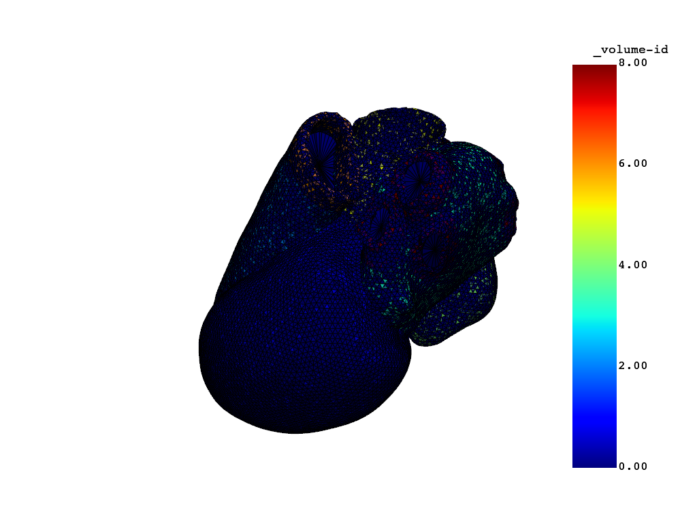
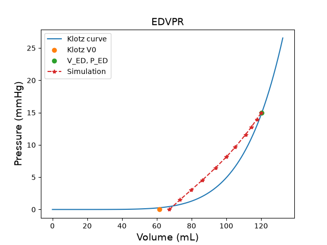
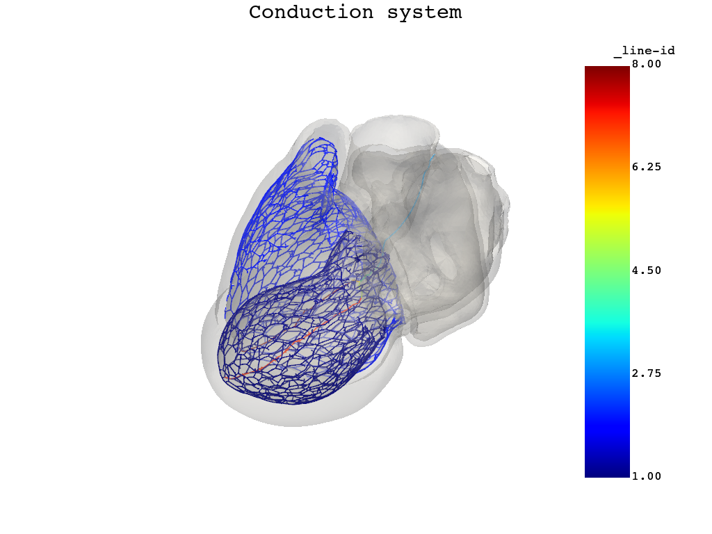

Note
Go to the end to download the full example code.
Run a full-heart EP mechanics simulation#
This example shows how to consume a full-heart model and set it up for a coupled electromechanical simulation.
Warning
When using a standalone version of the DPF Server, you must accept the license terms. To accept these terms, you can set this environment variable:
import os
os.environ["ANSYS_DPF_ACCEPT_LA"] = "Y"
Perform the required imports#
Import the required modules.
import os
from pathlib import Path
import numpy as np
from pint import Quantity
from ansys.health.heart.examples import get_preprocessed_fullheart
import ansys.health.heart.models as models
from ansys.health.heart.settings.material.cell_models import (
TentusscherEndo,
TentusscherEpi,
TentusscherMid,
)
import ansys.health.heart.settings.material.ep_material_factory as ep_material_factory
from ansys.health.heart.settings.material.material import ISO, Mat295
from ansys.health.heart.simulator import DynaSettings, EPMechanicsSimulator
Set the required paths#
Set the working directory and path to the model.
# Get the path to a preprocessed full-heart model.
path_to_model, path_to_partinfo, _ = get_preprocessed_fullheart(resolution="2.0mm")
# Set the working directory.
workdir = Path.home() / "pyansys-heart" / "downloads" / "Rodero2021" / "01" / "FullHeart"
Load the full-heart model#
# Load the full-heart model.
model = models.HeartModel.load_model(path_to_model, path_to_partinfo, working_directory=workdir)
Instantiate the simulator#
Instantiate the simulator and define settings.
Note
The DynaSettings object supports several LS-DYNA versions and platforms,
including smp, intempi, msmpi, windows, linux, and wsl.
Choose the one that works for your setup.
lsdyna_path = r"your_dyna_exe"
dyna_settings = DynaSettings(
lsdyna_path=lsdyna_path, dynatype="intelmpi", platform="windows", num_cpus=4
)
# Instantiate the simulator.
simulator = EPMechanicsSimulator(
model=model,
dyna_settings=dyna_settings,
simulation_directory=os.path.join(workdir, "ep-mechanics"),
)
# Load default simulation settings.
simulator.settings.load_defaults()
# Use the ReactionEikonal solver for the electrophysiology simulation.
simulator.settings.electrophysiology.analysis.solvertype = "ReactionEikonal"
Compute the fiber orientation#
Compute the fiber orientation on the entire model.
# Import the appendage landmarks.
from ansys.health.heart.pre.database_utils import right_atrium_appendage_landmarks
# Get the right atrium appendage landmark of the first case of Rodero2021.
right_atrium_appendage_coordinates = right_atrium_appendage_landmarks.get("Rodero2021").get(1)
# Compute fiber orientation in the ventricles and atria.
simulator.compute_fibers()
simulator.compute_left_atrial_fiber()
simulator.compute_right_atrial_fiber(appendage=right_atrium_appendage_coordinates)
# Switch the atria to active.
simulator.model.left_atrium.fiber = True
simulator.model.left_atrium.active = True
simulator.model.right_atrium.fiber = True
simulator.model.right_atrium.active = True
C:\Users\ansys\actions-runner\_work\pyansys-heart\pyansys-heart\.tox\doc-html\Lib\site-packages\ansys\health\heart\writer\writer_utils.py:91: FutureWarning: The behavior of DataFrame concatenation with empty or all-NA entries is deprecated. In a future version, this will no longer exclude empty or all-NA columns when determining the result dtypes. To retain the old behavior, exclude the relevant entries before the concat operation.
df1 = pd.concat([node_kw.nodes, df], axis=0, ignore_index=True, join="outer")
Set up the simulation for the mechanical simulations#
# Extract elements around atrial caps and assign as a passive material.
ring = simulator.model.create_atrial_stiff_ring(radius=5)
# Assign a material that is stiffer than the surrounding material.
stiff_iso = Mat295(rho=0.001, iso=ISO(itype=-1, beta=2, kappa=10, mu1=0.1, alpha1=2))
ring.meca_material = stiff_iso
# Assign the default EP material
ring.ep_material = ep_material_factory.get_default_myocardium_material(
simulator.settings.electrophysiology.analysis.solvertype
)
# plot the mesh
simulator.model.plot_mesh()
# Compute UHCs (Universal Heart Coordinates).
simulator.compute_uhc()
# Extract nodes in the endocardium, mid-myocardium, and epicardium based by transmural coordinate.
# Values from experimental data. See:
# https://www.frontiersin.org/articles/10.3389/fphys.2019.00580/full
values = simulator.model.mesh.point_data["transmural"]
th_endo = simulator.settings.electrophysiology.layers["percent_endo"].m
percent_mid = simulator.settings.electrophysiology.layers["percent_mid"].m
th_mid = th_endo + percent_mid
endo_nodes = (np.nonzero(np.logical_and(values >= 0, values < th_endo)))[0]
mid_nodes = (np.nonzero(np.logical_and(values >= th_endo, values < th_mid)))[0]
epi_nodes = (np.nonzero(np.logical_and(values >= th_mid, values <= 1)))[0]
# Define cell model for each layer and assign to the corresponding nodesets.
simulator.model._nodeset_cellmodel = (
[endo_nodes, mid_nodes, epi_nodes],
[TentusscherEndo(), TentusscherMid(), TentusscherEpi()],
)
# Extract elements close to the valves and assign these a passive material.
simulator.model.create_stiff_ventricle_base(stiff_material=stiff_iso)
# Compute the stress-free configuration.
simulator.compute_stress_free_configuration(overwrite=True)


C:\Users\ansys\actions-runner\_work\pyansys-heart\pyansys-heart\.tox\doc-html\Lib\site-packages\ansys\health\heart\writer\writer_utils.py:91: FutureWarning: The behavior of DataFrame concatenation with empty or all-NA entries is deprecated. In a future version, this will no longer exclude empty or all-NA columns when determining the result dtypes. To retain the old behavior, exclude the relevant entries before the concat operation.
df1 = pd.concat([node_kw.nodes, df], axis=0, ignore_index=True, join="outer")
({'Simulation output time (ms)': [0.0, 100.0, 200.3564453125, 303.1483154296875, 429.639404296875, 543.003662109375, 643.2411499023438, 772.7926635742188, 852.2255249023438, 931.6583251953125, 1000.0], 'Convergence': {'max_error (mm)': np.float64(18.748950948986938), 'mean_error (mm)': np.float64(2.0711047139705325)}, 'Cavity volumes': {'Left ventricle cavity': {'imposed cavity pressure (mmHg)': 15.0, 'true end diastolic volume (mm3)': 120446.96049660804, 'simulated volumes (mm3)': [67250.16514952549, 73381.09103363697, 79740.72288449113, 86256.54616890854, 93779.18955236519, 100073.7008270846, 105125.42365106697, 111074.31962393521, 114441.19475084648, 117533.0671972173, 120157.27409538408], 'volume error (%)': 0.2405095155822641}, 'Right ventricle cavity': {'imposed cavity pressure (mmHg)': 8.0, 'true end diastolic volume (mm3)': 185648.4505311891, 'simulated volumes (mm3)': [60324.90829826989, 99784.86455553581, 127227.30690051317, 143935.50981307955, 159534.48014959367, 170850.79321316554, 179708.01745866679, 189738.42804925493, 195359.0883939247, 200638.05507070667, 204927.40295785706], 'volume error (%)': -10.384655714338475}, 'Left atrium cavity': {'imposed cavity pressure (mmHg)': 15.0, 'true end diastolic volume (mm3)': 68001.90309648328, 'simulated volumes (mm3)': [6063.992035893494, 18683.889791736667, 36041.86296078672, 54502.10436453705, 66136.42399876475, 73992.14638868172, 80533.859172877, 87082.11881984303, 90993.93809862275, 94445.6507546565, 97253.94778406346], 'volume error (%)': -43.01650888516524}, 'Right atrium cavity': {'imposed cavity pressure (mmHg)': 8.0, 'true end diastolic volume (mm3)': 110948.18865153291, 'simulated volumes (mm3)': [49726.36311659627, 61634.12201604304, 71347.64382190286, 79622.78944030039, 87775.07036432775, 93714.51784961252, 98378.22157653052, 103632.7940235994, 106614.90406443397, 109401.45203669684, 111696.06608906866], 'volume error (%)': -0.6740780959342081}}}, DPFArray([[101.54945374, 50.11022949, 10.99630642],
[103.3175354 , 50.11639404, 12.44313717],
[102.3127594 , 49.20116425, 14.19369888],
...,
[ 37.00266266, 55.93001175, 50.06879044],
[ 14.7376585 , 59.82291794, 31.48579025],
[ 18.41151237, 62.61434937, 95.19060516]], shape=(72171, 3)), DPFArray([[112.53088379, 40.53034973, 5.68274593],
[114.26644897, 40.59529495, 7.2369566 ],
[112.36664581, 39.86889648, 8.13905621],
...,
[ 41.99570465, 51.40354919, 45.42599487],
[ 15.73549747, 55.09887695, 25.54956627],
[ 18.41151237, 62.61434937, 95.19060516]], shape=(72171, 3)))
Note
Computing the stress-free configuration is required since the geometry is imaged
at end-of-diastole. The compute_stress_free_configuration() method runs a
sequence of static simulations to estimate the stress-free state of the model and
the initial stresses present. This step is computationally expensive and can take
relatively long. You can consider reusing earlier runs by setting the overwrite
flag to False. This reuses the results of the previous run.
Compute a conduction system#
# Compute the conduction system.
simulator.compute_purkinje()
# Use landmarks to compute the rest of the conduction system.
simulator.compute_conduction_system()
# Plot the computed conduction system.
simulator.model.plot_purkinje()

C:\Users\ansys\actions-runner\_work\pyansys-heart\pyansys-heart\.tox\doc-html\Lib\site-packages\ansys\health\heart\writer\writer_utils.py:91: FutureWarning: The behavior of DataFrame concatenation with empty or all-NA entries is deprecated. In a future version, this will no longer exclude empty or all-NA columns when determining the result dtypes. To retain the old behavior, exclude the relevant entries before the concat operation.
df1 = pd.concat([node_kw.nodes, df], axis=0, ignore_index=True, join="outer")
C:\Users\ansys\actions-runner\_work\pyansys-heart\pyansys-heart\.tox\doc-html\Lib\site-packages\ansys\health\heart\pre\conduction_path.py:774: PyVistaDeprecationWarning: This filter is deprecated. Use `select_interior_points` instead.
ids = np.where(cell_center.select_enclosed_points(sphere)["SelectedPoints"])[0]
C:\Users\ansys\actions-runner\_work\pyansys-heart\pyansys-heart\.tox\doc-html\Lib\site-packages\ansys\health\heart\pre\conduction_path.py:774: PyVistaDeprecationWarning: This filter is deprecated. Use `select_interior_points` instead.
ids = np.where(cell_center.select_enclosed_points(sphere)["SelectedPoints"])[0]
C:\Users\ansys\actions-runner\_work\pyansys-heart\pyansys-heart\.tox\doc-html\Lib\site-packages\ansys\health\heart\pre\conduction_path.py:774: PyVistaDeprecationWarning: This filter is deprecated. Use `select_interior_points` instead.
ids = np.where(cell_center.select_enclosed_points(sphere)["SelectedPoints"])[0]
Start the main simulation#
Set the simulation end time and frequency of output files.
simulator.settings.mechanics.analysis.end_time = Quantity(800, "ms")
simulator.settings.mechanics.analysis.dt_d3plot = Quantity(10, "ms")
# Save the model to a file.
simulator.model.save_model(os.path.join(workdir, "heart_fib_beam.vtu"))
('C:\\Users\\ansys\\pyansys-heart\\downloads\\Rodero2021\\01\\FullHeart\\heart_fib_beam.vtu', 'C:\\Users\\ansys\\pyansys-heart\\downloads\\Rodero2021\\01\\FullHeart\\heart_fib_beam.partinfo.json')
Note
A constant pressure is prescribed to the atria. No circulation system is coupled with the atria.
# Start main simulation. The ``auto_post`` option is set to ``False`` to avoid
# automatic postprocessing.
simulator.simulate(auto_post=False)
C:\Users\ansys\actions-runner\_work\pyansys-heart\pyansys-heart\.tox\doc-html\Lib\site-packages\ansys\health\heart\writer\writer_utils.py:91: FutureWarning: The behavior of DataFrame concatenation with empty or all-NA entries is deprecated. In a future version, this will no longer exclude empty or all-NA columns when determining the result dtypes. To retain the old behavior, exclude the relevant entries before the concat operation.
df1 = pd.concat([node_kw.nodes, df], axis=0, ignore_index=True, join="outer")
Note
The ReactionEikonal solver is suitable for coarse meshes and is
included here for demonstration purposes. However, it currently supports
only a single cardiac cycle. To simulate multiple cardiac cycles, use the
Monodomain solver, which requires a fine mesh and small time step size.
Visualize and animate results LS-PrePost#
Total running time of the script: (63 minutes 27.286 seconds)